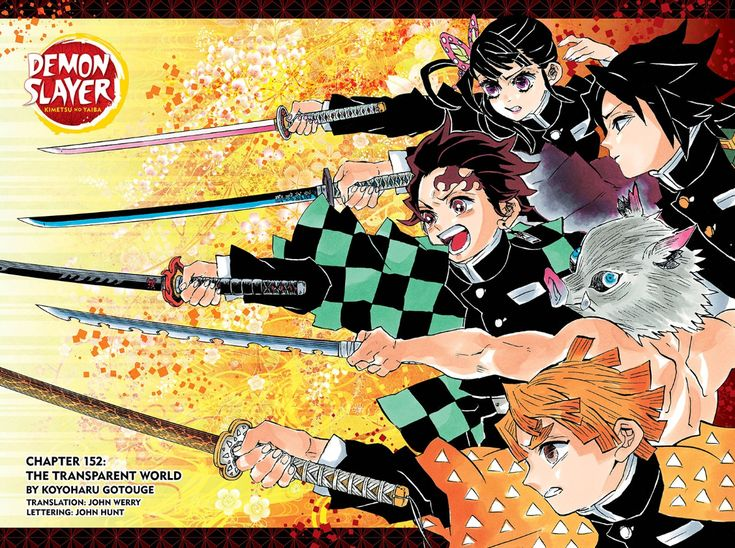
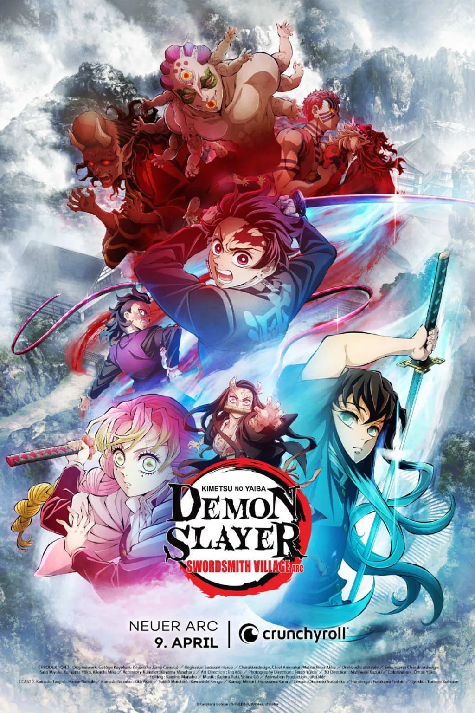
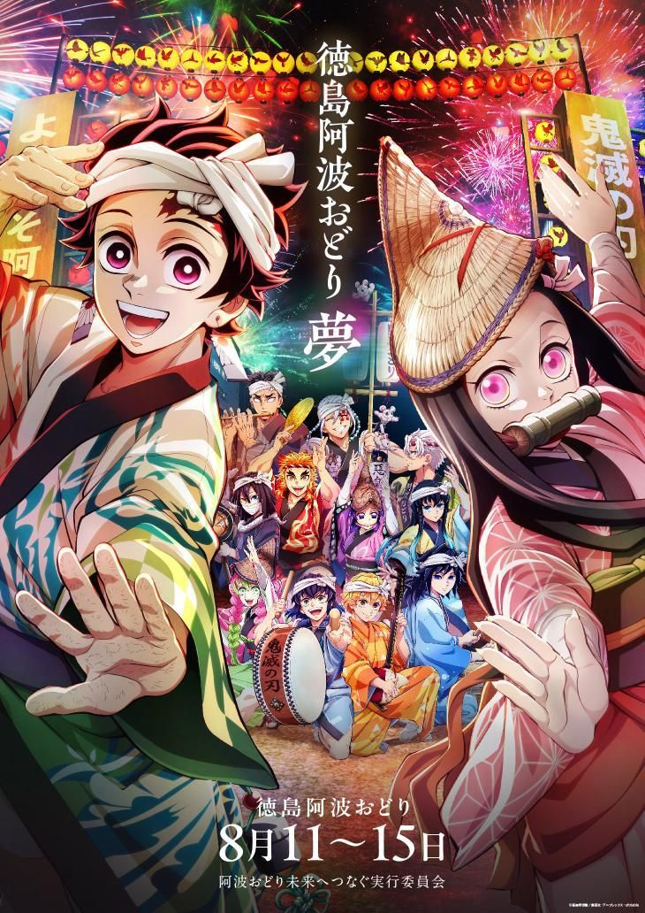
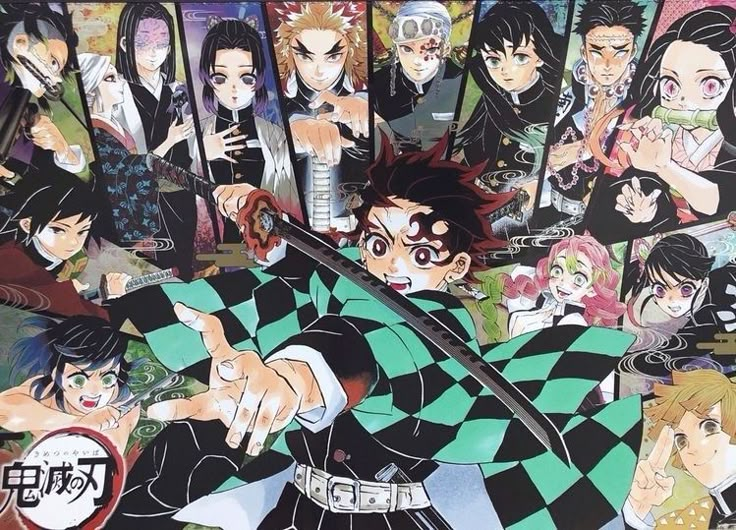

Demon Slayer is a Japanese anime series that has captivated audiences worldwide with its stunning animation, compelling storyline, and well-developed characters. Here are some reasons why Demon Slayer is considered one of the best anime series:
Stunning And Breathtaking Animation Quality
Studio Ufotable's animation in Demon Slayer sets a new benchmark with fluid motion, vibrant effects, and cinematic camera work.
Fight scenes like Tanjiro vs. Rui or Rengoku vs. Akaza are visually stunning and emotionally charged, elevating the storytelling.
Dr. Stone relies more on static visuals and dialogue-driven scenes, which lack the same immersive impact.
Emotional Storytelling and Character Bonds

Tanjiro's journey is deeply personal, driven by love for his sister Nezuko and the trauma of losing his family.
The emotional stakes are high, making each battle feel meaningful and every loss hit hard.
Stone focuses more on intellectual curiosity and scientific progress, which can feel emotionally distant by comparison.
High-Stakes Action And Pacing

Demon Slayer maintains tight pacing with intense, life-or-death battles that keep viewers engaged.
The breathing techniques and demon abilities add tactical depth and variety to combat.
Dr. Stone often slows down for scientific exposition, which can dilute tension and momentum.
Global Cultural Impact

Demon Slayer has achieved massive global popularity, breaking box office records and winning numerous awards.
The series has sparked a resurgence in anime interest worldwide, influencing fashion, music, and pop culture.
While Dr. Stone has a loyal fanbase, but hasn't reached the same level of cultural penetration or mainstream recognition.
Conclusion

Demon Slayer delivers powerful character arcs and heartfelt relationships, especially between Tanjiro and Nezuko, creating deep viewer connection.
Its animation is cinematic and immersive, elevating both action and emotion far beyond what Dr. Stone offers.
The series blends action, emotion, and artistry seamlessly, making each episode compelling and memorable.
It captivates both longtime anime fans and newcomers, proving its universal resonance.
Demon Slayer redefined anime's global presence, becoming an iconic franchise that outshines Dr. Stone in influence and recognition.